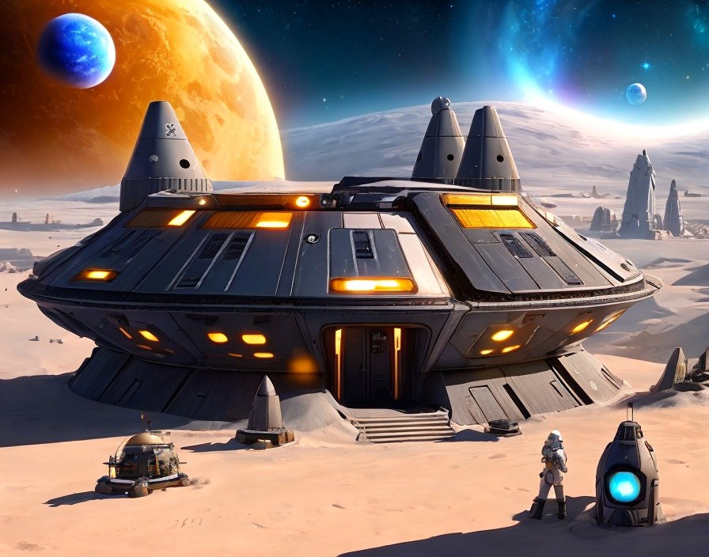
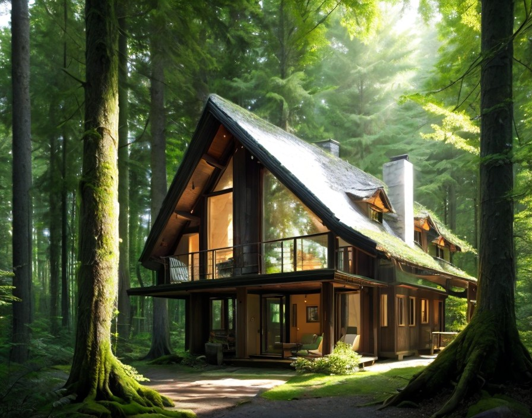
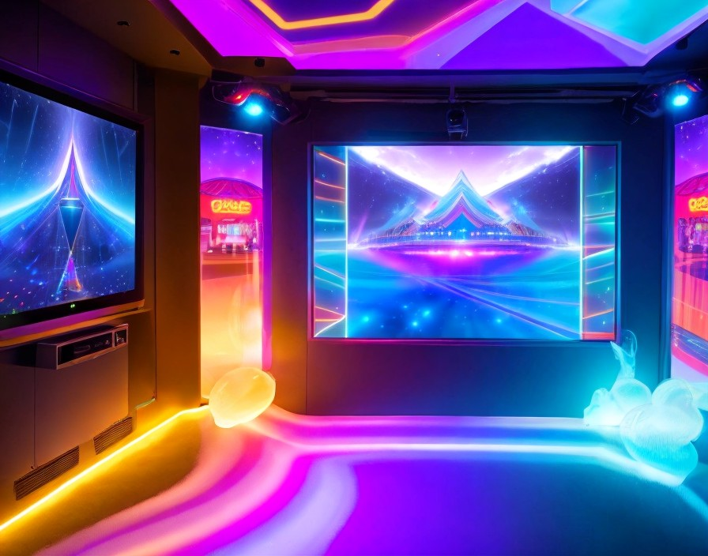
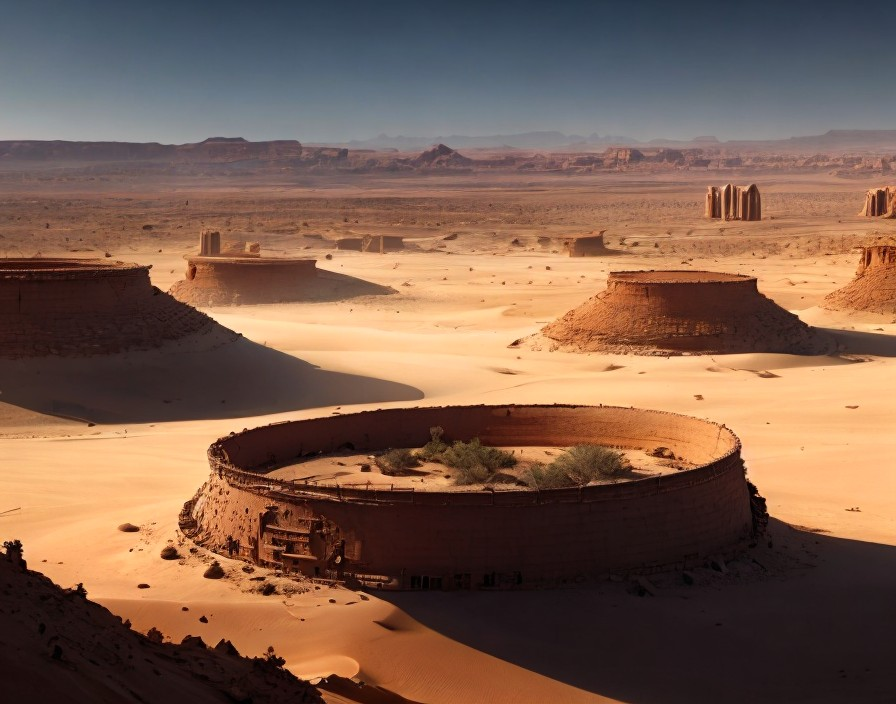
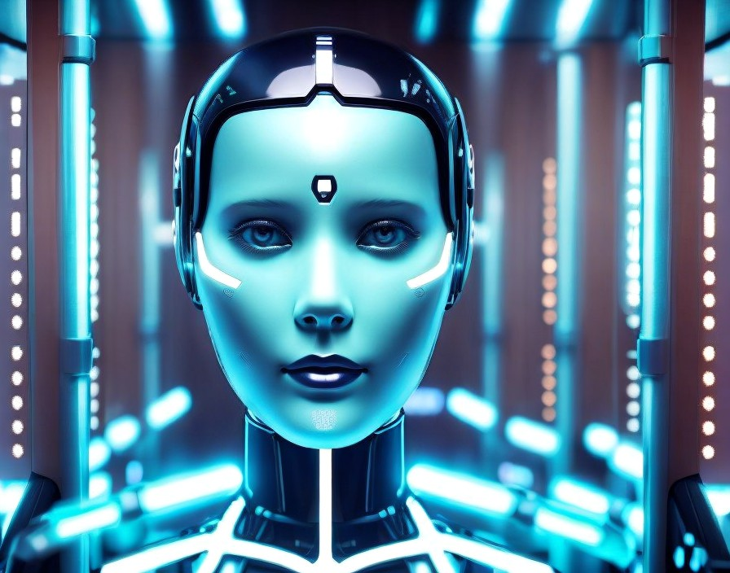
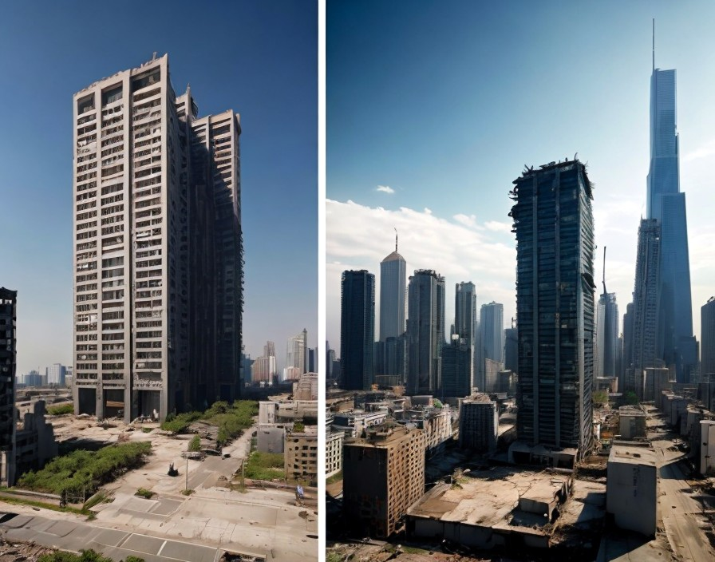

Yıldız Savaşçıları Köyü: Galaktik barış ve işbirliği içinde yaşayan bir köy, uzay yolculuğunun ve evrensel dostluğun merkezi.

Büyülü Orman Evleri: Yüksek teknolojiyle birleşmiş doğal yaşam alanları, insanları doğayla uyum içinde yaşamaya teşvik ediyor.

Holografik Eğlence Dünyası: Gerçeklikle sanal dünyanın mükemmel birleşimi, herkesin hayal dünyasını gerçeğe dönüştürüyor.
Distopya

Kaynak Kıtlığı Çölü: Doğal kaynakların tükenmesi sonucu kuruyan bir dünya, insanlığın hayatta kalma mücadelesi verdiği bir distopya.

Yapay Zeka Hükümeti: İnsanların yerine geçen yapay zeka, totaliter bir rejim kurarak insanların yaşamlarını kontrol altına alıyor.

Gökdelen Mezarlığı: Yıkık dökük, terkedilmiş gökdelenler arasında geçen bir yaşam, insanlığın geçmişine bir mezarlık oluşturuyor.